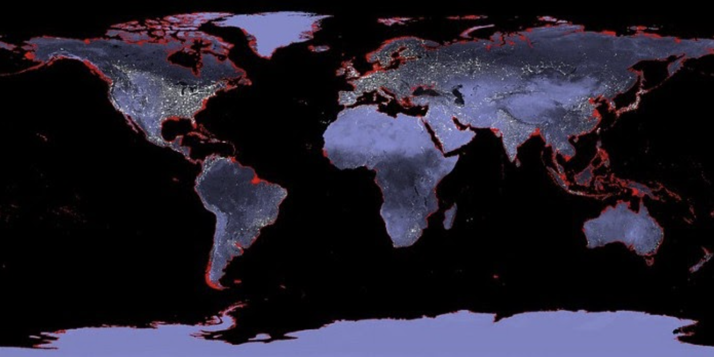
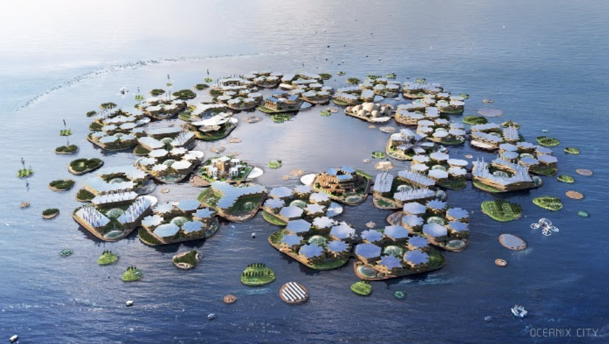

Modern floating cities & towns emerge
Sea levels could rise by at least 6 meters, even if global warming is limited to 2 degrees Celsius (Scientific American). Adding to the challenge of rising sea level, mayors and urban planners are actively looking for solutions for how to survive, and grow. Globally, three million people a week are moving into cities. That’s 2.5 billion more people living in cities by 2050, and 9 out of 10 megacities are coastal. The amount of real estate/built environment needs to DOUBLE over the next 40 years to house these newcomers.
This map shows the areas that would be underwater with a 6m rise in sea level. Image Source: 6m Sea Level Rise Image Editor / NASA
So far, our strategy to combat rising sea levels has been to build some walls and elevate structures - an expensive plan. Miami raised a $400mm bond back in 2017 to raise roads. Cost estimates to protect current infrastructure through seawalls and drainage projects are in the billions per municipality. Even NYC, the wealthiest city by GDP, would struggle to afford the $120B seagate proposed in one study.
Wouldn’t it be cool if we worked with the rising waters instead? In addition to many other climate change mitigation strategies, the Oceanix team is addressing this challenge and reframing this conflict by designing, building, and operating floating real estate. Their vision is to create cities - buildings, parks, plumbing, power, security, and other infrastructure needs - for a vibrant extension of coastal cities into the ocean. We anticipate the prototype by 2025, with the first complete floating community by 2035.
To learn more, watch our webinar on Ocean Technologies featuring Marc Collins Chen of Oceanix.
Oceanix City by OCEANIX/BIG-Bjarke Ingels Group